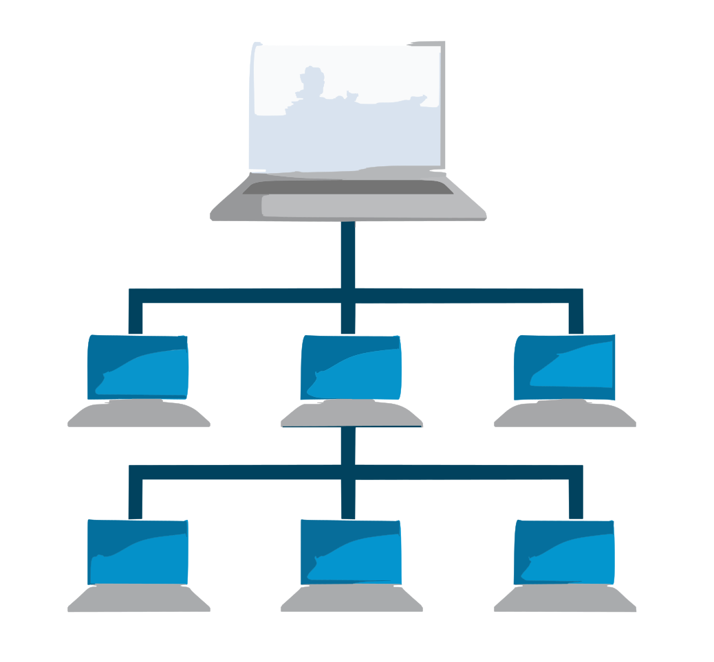

BDD
Nos permite manejar diversos datos en gran cantidad y manipularlos segun las necesidades del usuario, sea este una persona u empresa.
EPN

EPN
REDES
Es realmente interesante por su alta utilidad en diferentes áreas empresariales y por su capaciad de escala a nivel profesional, maneja direcciones, hosts y protocolos de administracion y servicio.
EPN

WEB
Es de las mas interesantes y actuales, donde incluye mucho ingenio, pasciencia y carisma de aprender cada día mas, una materia muy progresiva que consta con diferentes herramientas que cada día pueden dar mayores funcionalidades y facilidades al desarrollo web y así prestar servicios de calidad.
EPN